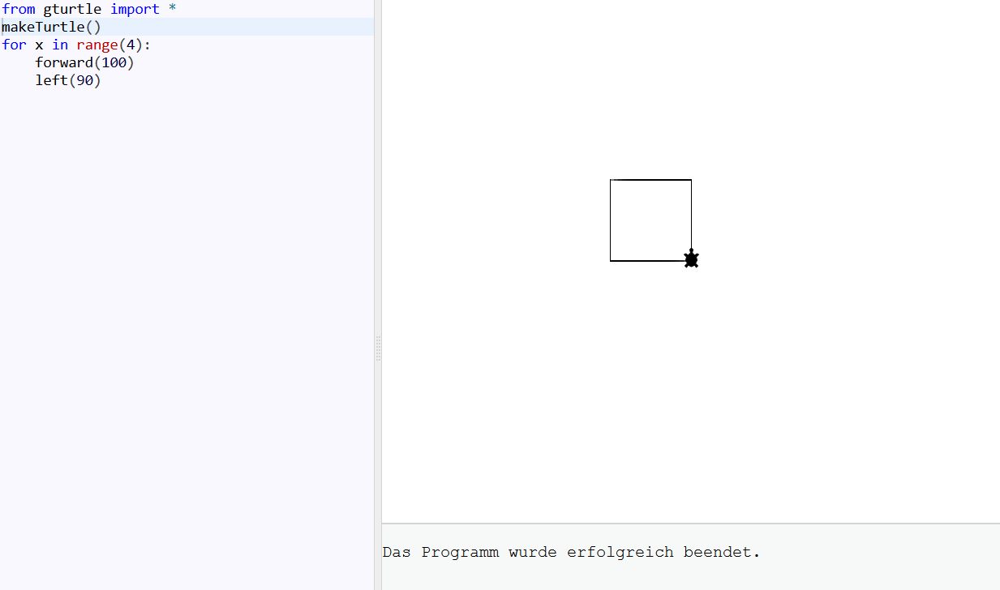
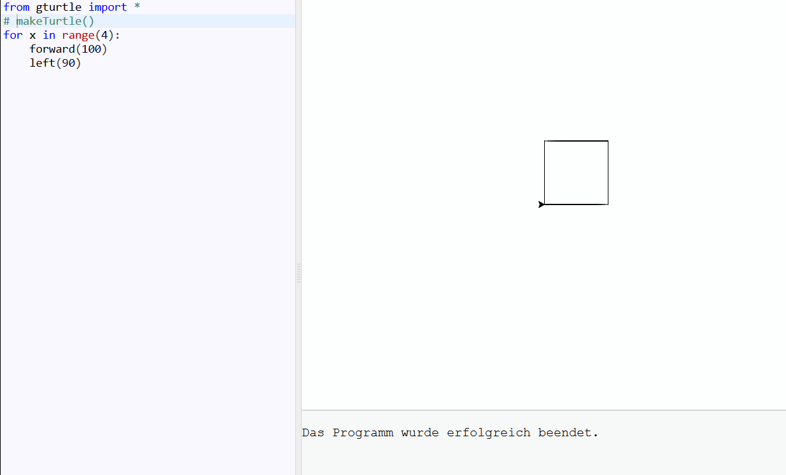
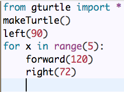
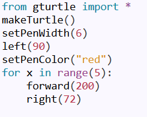
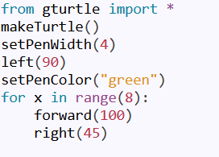
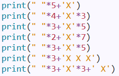
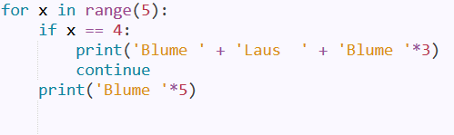
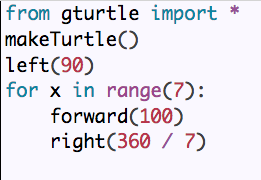
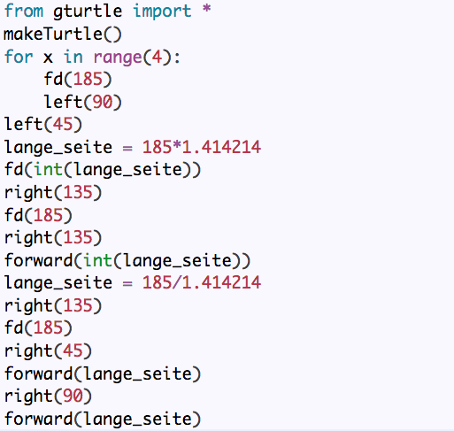
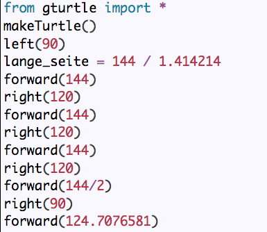

Aufgabe 1a):
Python ist eine Programmiersprach und wurde von Guido van Rossum entwickelt in den 1990er Jahren entwickelt und ist im Jahr 1994 erschienen. Python ist für Anfänger leichter zu lerenen (unter anderem weil sie übersichtlicher ist)als zum Beispiel Objektorientiert Sprachen wie C#. Gerade ist die Python version 3 aktuell. Obwohl auf dem Logo von Python zwei Schlangen zusehen sind, kommt der Name nicht von der Schlange sondern von dem Name Monty Python.
Aufgabe 1b):
TigerJython ist eine einfache Entwicklungsumgebung. Sie ist für Programmieranfänger gedacht. Aus diesem Grund besitzt TigerJython nicht alle Funktionen wie zum Beispiel IDLE.
Aufgabe 1c):
Programmieren bedeutet mit dem Computer zu Kommunizieren. Man teilt mit einer Programmiersprache dem Computer mit, was er machen soll. Eine Interpreter übersertzt die für Menschne verständliche Programmierspreache in Maschienensprache. Wenn man Programmiert ist das Ziel einen Prozess zu automatisieren.
Aufgabe 2d-f):
Folgende Fehler werden angezeigt:
(Zeile 1 auskommentiert):[Zeile: 2] NameError: name 'makeTurtle' is not defined
(Zeile 2 auskommentiert): Das Programm wurde erfolgreich beendet.
(Zeile 2 gelöscht): Rufe makeTurtle() auf, um die Zeichenfläche zu erstellen!
(Zeile 3 auskommentiert): Das Programm wurde erfolgreich beendet.


Aufgabe 3:
Ich/Wir haben heute etwas über den ursprung von Python gelernt und, dass TigerJython recht buggy ist.
Aufgabe 4a):
Wenn man den Befehl left() verwendne möchte so dass sich die Turtle nach Rechts drehtkann man einfach left(-x) verwenden.
Aufgabe 4b):
I: Zwei Befehle reichen aus, da man mit einer Negation den befehl das gegenteil machen lassen kann. Mann kann mit forward(), die Turtle nach Vorne und nach hinten bewegen und mit left(), nach rechts und links.
Aufgabe 4c):
<6>:
Wir haben vermutet, dass das Programm funktioniert. Das tat es auch. Worauf die Autoren hinauswollten ist, dass man merken sollte, dass sie, um nach links abzubiegen, 'right(270)' verwendet was gleichbedeutend ist mit 'left(90)'.
<7>:
Damit die Turtle ein regelmäßiges 5-eck zeichnet muss sie sich nach jedem Strich 72˚ nach rechts drehen (360/6 = 72). Damit man nicht so viel Code benötigt habe ich dies in eine for-Schleife geschrieben. Außerdem, damit die Zeichnung nicht so schief aussieht habe ich die Turtle am Anfang um 90˚ drehen lassen.

<8>:
KeineProbleme:

<9>:
KeineProbleme:

Aufgabe 4d):
Bei einem Innenwinkel eines Sechsecks ist der Innenwinkel eines Winkels 120°. Der Drehwinkel muss außerdem komplemetär zu 180° sein. 180° - 120° = 60°
Aufgabe 5a):
Es wird alles in eine Zeile geschrieben. \n ist ein Zeilenumbruch.
Aufgabe 5b):
\n zu verwenden ist vernünftig, wenn man im Code Platz sparen will. So kann man Ausgaben, die über mehrere Zeilen gehen sollen, in eine Zeile schreiben.
Aufgabe 5c):
<10>

<11>

Aufgabe 6a):
<12>
Die erste Möglichkeit wiederholt eine Zeichenkette (string), da die drei in Anfürungszeichen gesetzt wurde und so als string erkannt wurde. Die zweite Möglichkeite rechnet einen Term, da in diesem Fall die drei als Zahl (Integer) erkannt wurde.
<13>
4*4*4*4+1 = 257
<14>

Die länge der Seiten ist wie man sieht in diesem Fall 100.
<15>

<15>

Denn a2 + b2 = c2. Eingesetzt: a2 + (144/2)2 = 1442. Umgestellte:√1442 -(144/2)2 = laenge